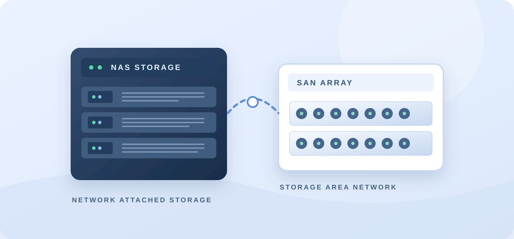
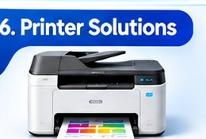
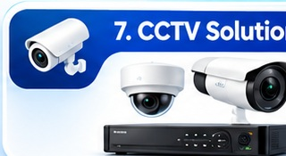

01 / SERVER
01 / SERVEROn-Premises Server Support
Windows Server deployment and administration, hardware health checks, RAID planning support, server configuration and troubleshooting.
Windows ServerDell PowerEdgeServer Support
Discuss server support ↗
 02 / VIRTUALIZATION
02 / VIRTUALIZATIONVirtualization & Hyper-V
Hyper-V host and VM setup, virtual switch configuration, VM migration assistance, replication health checks and recovery planning.
Hyper-VVM ManagementDR
Discuss virtualization ↗
 03 / NETWORK
03 / NETWORKNetwork & Firewall Consulting
Office network troubleshooting, firewall policy review, VPN assistance, VLAN and connectivity diagnosis, and secure network configuration.
FortinetSonicWallSwitching
Discuss network support ↗

04 / STORAGENAS, SAN & Backup
NAS share setup, access permissions, storage utilization reporting, backup job review and cloud backup workflow assistance.
QNAP NASDell SANAWS S3
Discuss storage support ↗
 05 / ENDPOINTS
05 / ENDPOINTSDesktop & Laptop Support
Windows troubleshooting, OS installation, performance diagnosis, RAM/SSD upgrade guidance and peripheral configuration.
Windows 10/11HardwareUpgrades
Discuss endpoint support ↗
 06 / LINUX & WEB
06 / LINUX & WEBLinux, Docker & Web Services
Ubuntu server administration, Docker deployment assistance, Nginx reverse proxy, IIS configuration and SSL/TLS certificate setup.
UbuntuDockerNginx / IIS
Discuss Linux support ↗
 07 / IDENTITY
07 / IDENTITYActive Directory & Microsoft 365
User and group administration, Group Policy, DNS/DHCP troubleshooting and Microsoft 365 administration assistance.
AD / GPODNS / DHCPM365
Discuss identity support ↗
 08 / AUTOMATION
08 / AUTOMATIONPowerShell & IT Reporting
Custom administration scripts, user exports, folder permission reports, storage reports and Hyper-V health reporting.
PowerShellAuditReporting
Discuss automation ↗

10 / PRINTER SOLUTIONS
Printer Setup & Support
Printer installation, driver configuration, troubleshooting, network printer setup over LAN or Wi-Fi, and routine maintenance support.
Printer SetupLAN / Wi-FiMaintenance
Discuss printer support ↗

11 / CCTV SOLUTIONS
CCTV Installation & Support
CCTV system planning, IP and analog camera setup, NVR/DVR configuration, remote viewing setup for mobile or web, and maintenance support.
IP / AnalogNVR / DVRRemote Viewing
Discuss CCTV solutions ↗
✳
09 / CONSULTATION
IT Technical Consultation
Practical guidance to plan, improve and secure your IT environment before making important technology decisions.
- IT infrastructure assessment and planning
- Server, network and virtualization architecture
- Cybersecurity best practices and risk review
- Cloud adoption guidance (AWS / Azure)
- IT budgeting, sizing and cost optimization
InfrastructureSecurityCloudIT Strategy
Discuss IT consultation ↗
Services are subject to availability, agreed scope and authorization. No production changes are made without client approval and a suitable backup/change plan.